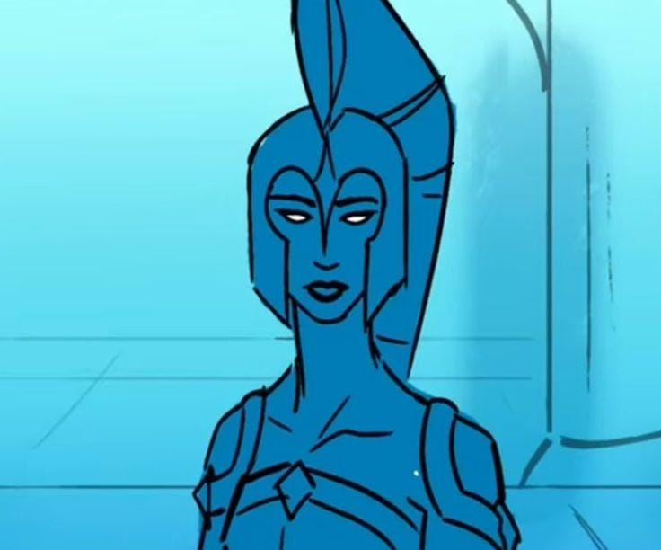

Atena é a deusa da sabedoria, estratégia e guerra justa. Entre todos os deuses do Olimpo, ela é uma das maiores aliadas de Odisseu, admirando especialmente sua inteligência e sua capacidade de pensar antes de agir.
Ao longo da história, Atena frequentemente ajuda o herói em momentos críticos. Mesmo que nem sempre possa interferir diretamente, ela guia Odisseu e Telêmaco, mostrando caminhos que podem levá-los mais perto de seu destino.